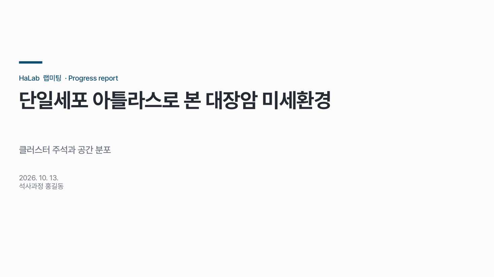
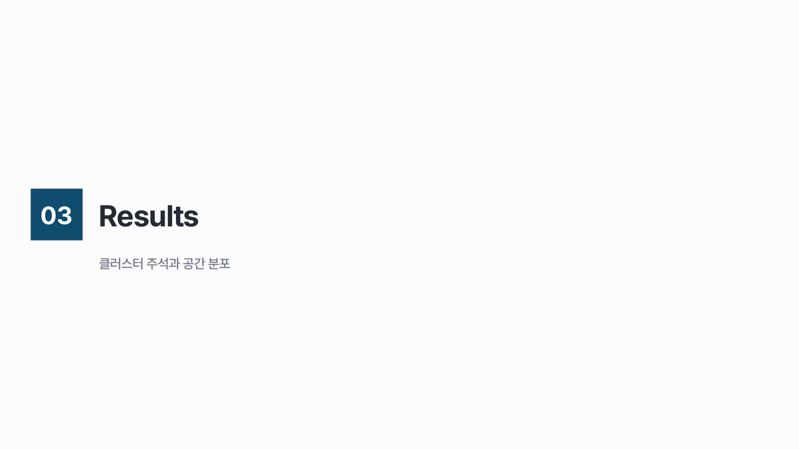
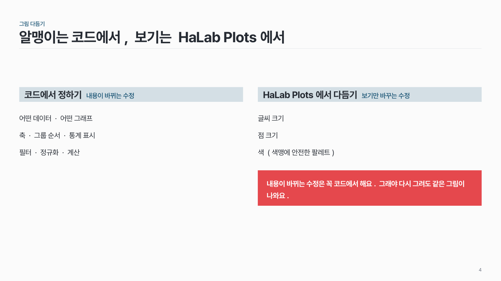
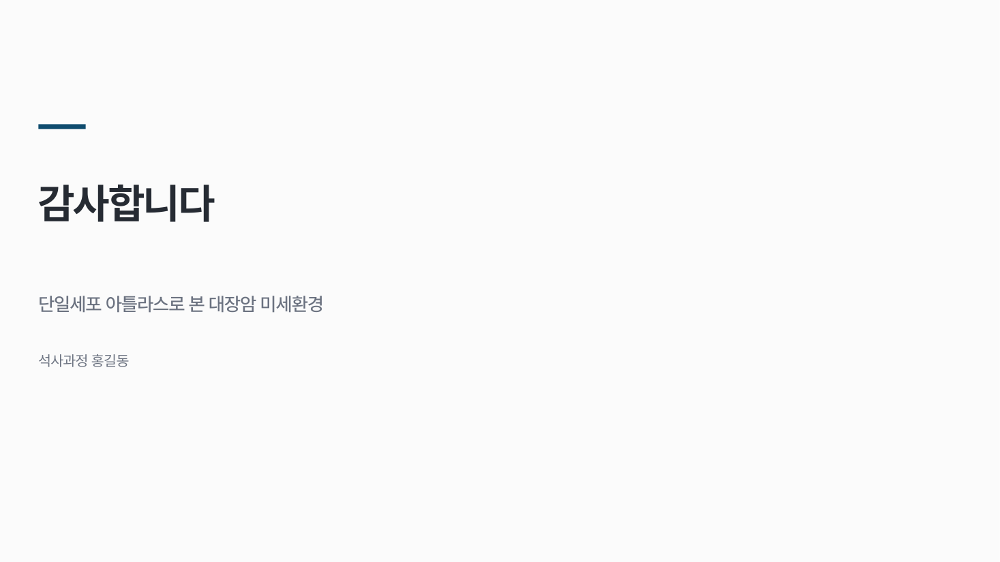
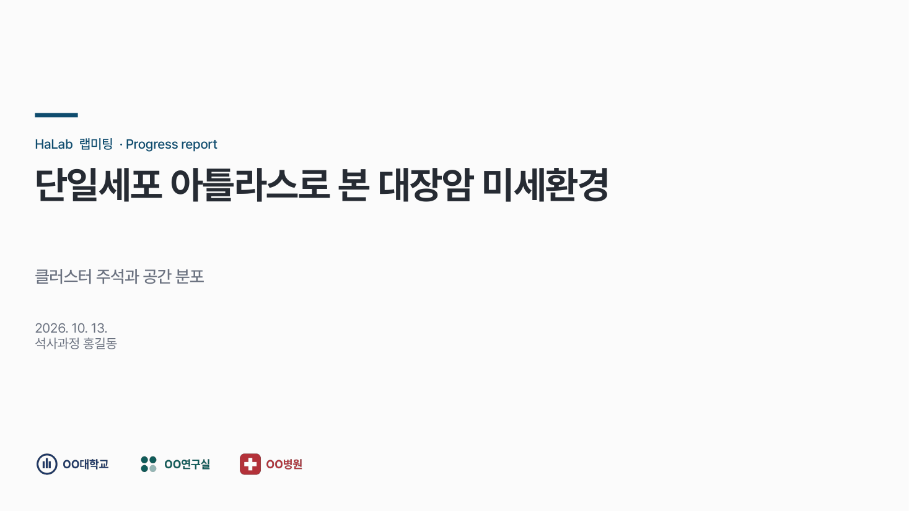

레이아웃 layouts
본문 말고 장의 틀: 표지, 목차, 간지, 2열, 마무리. 자리가 정해져 있어 내용만 넣으면 돼요.

이 시안
L1 표지
슬라이드 제목: 단일세포 아틀라스로 본 대장암 미세환경
언제 쓰나
발표의 처음과 끝, 섹션이 바뀌는 곳, 짝이 있는 두 갈래 목록을 보여 줄 때요. 나머지 본문 장은 모두 "헤더 + 빈 본문" 위에 패턴을 그려요.
구성
- 표지: 발표 구분(작게) → 제목(크게, 두 줄 이내) → 부제 → 날짜·발표자, 맨 아래 기관 로고 한 줄.
- 목차: 왼쪽 제목, 오른쪽에 번호 배지 + 항목.
- 간지: 번호 + 섹션 이름 (+ 한 줄).
- 2열: 소제목 색 칸 두 개 + 아래 목록, 필요하면 맨 아래 강조 칸.
- 마무리: 감사 문구 + 제목 한 줄 + 발표자.
지킬 것
- 목차 항목 7개 이내. 섹션이 4개 이상일 때만 목차를 넣어요.
- 2열은 열마다 항목 6개 이내, 소제목 칸 + 설명 1–2줄.
- 간지에는 다른 요소를 넣지 않아요.
- 기관 로고는 표지 · 마무리 아래 한 줄에만, 모두 같은 높이로.
하지 말 것
- 표지에 사진·도형을 잔뜩 얹지 않아요.
- 제목을 90도 세로로 쓰지 않아요.
- 모든 본문 장을 "제목 + 글머리 기호 4개"로 만들지 않아요.
팁
예시 pptx를 받으면 이 레이아웃들이 슬라이드 마스터에 들어 있어요. 새 슬라이드 > 레이아웃에서 골라 쓰면 위치와 글꼴이 맞춰져요.
시안 비교
같은 내용을 옵션만 바꿔 그렸어요. 그림을 누르면 크게 보여요.
AL1 표지
슬라이드 제목: 단일세포 아틀라스로 본 대장암 미세환경

BL2 목차
슬라이드 제목: 목차

CL3 간지
슬라이드 제목: Results

DL5 2열 · 소제목 아래 메모 · 맨 아래 강조 칸
슬라이드 제목: 알맹이는 코드에서, 보기는 HaLab Plots에서

EL6 마무리
슬라이드 제목: 감사합니다

FL1 표지 · 아래 기관 로고 한 줄
슬라이드 제목: 단일세포 아틀라스로 본 대장암 미세환경